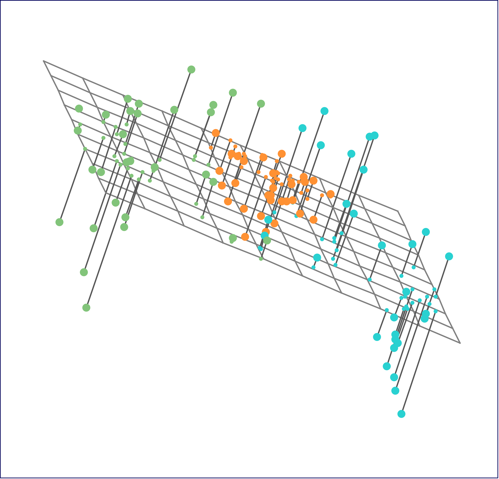
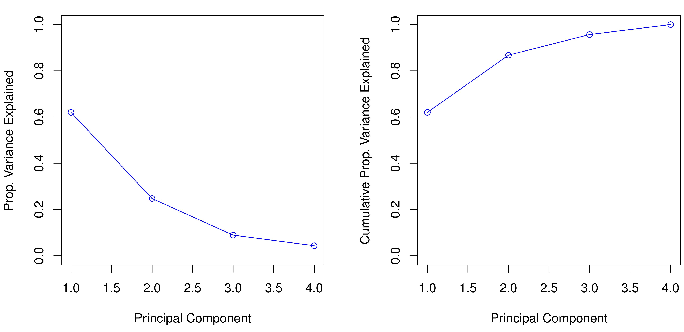
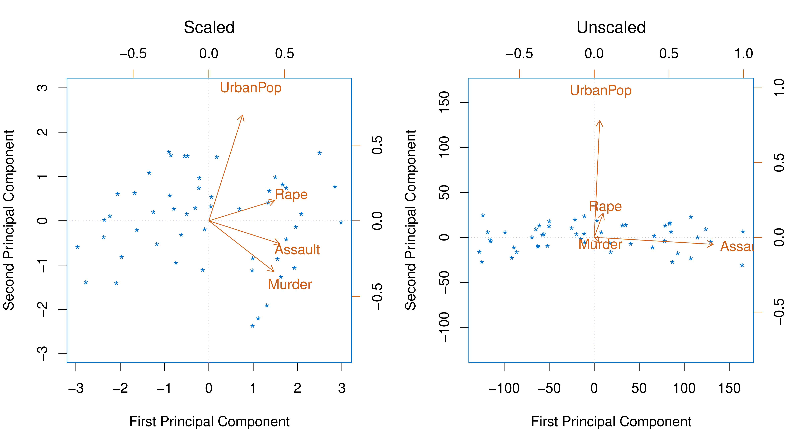
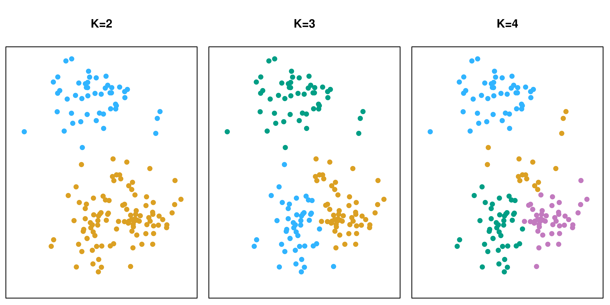
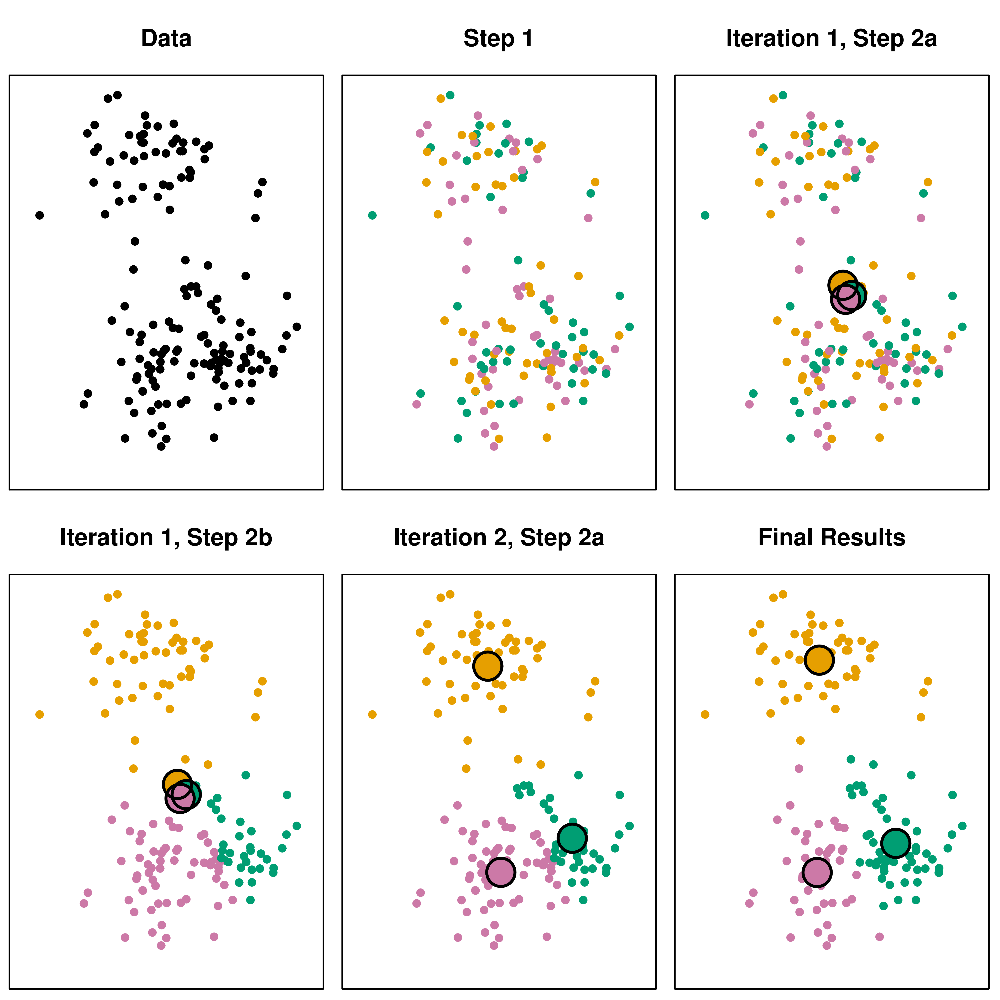
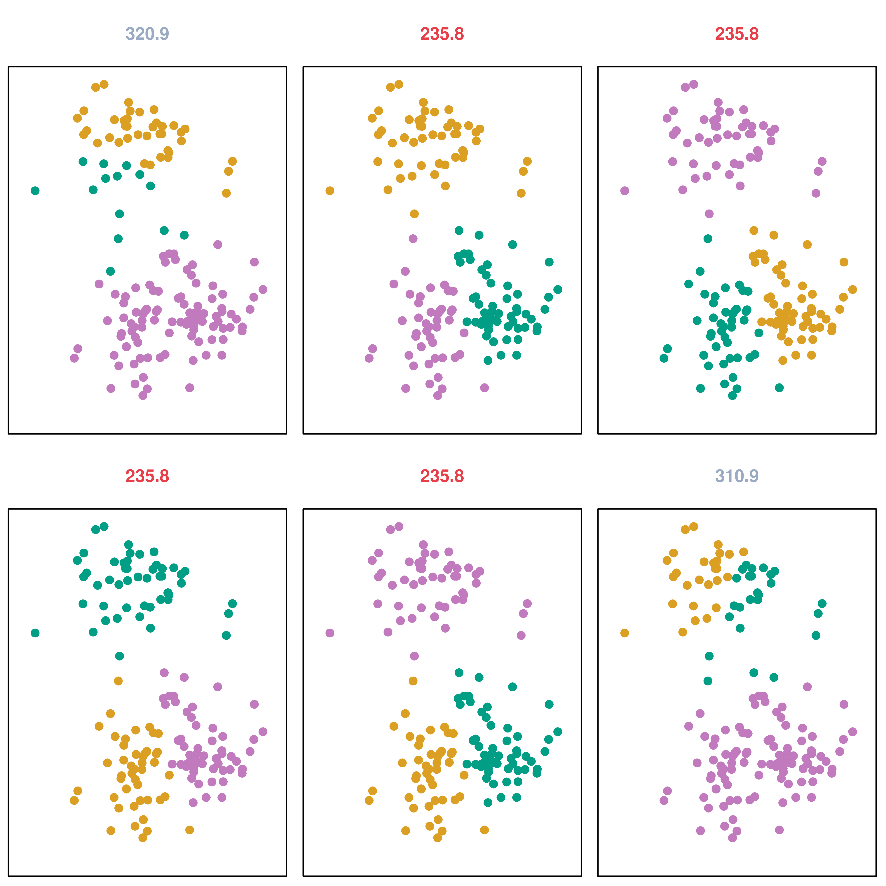
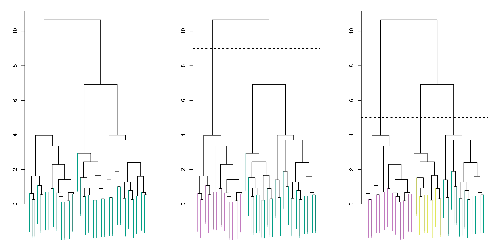
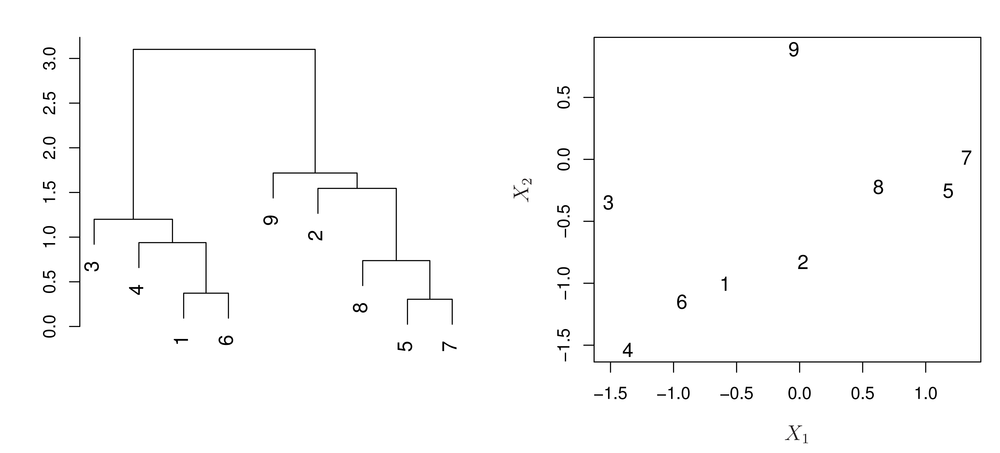
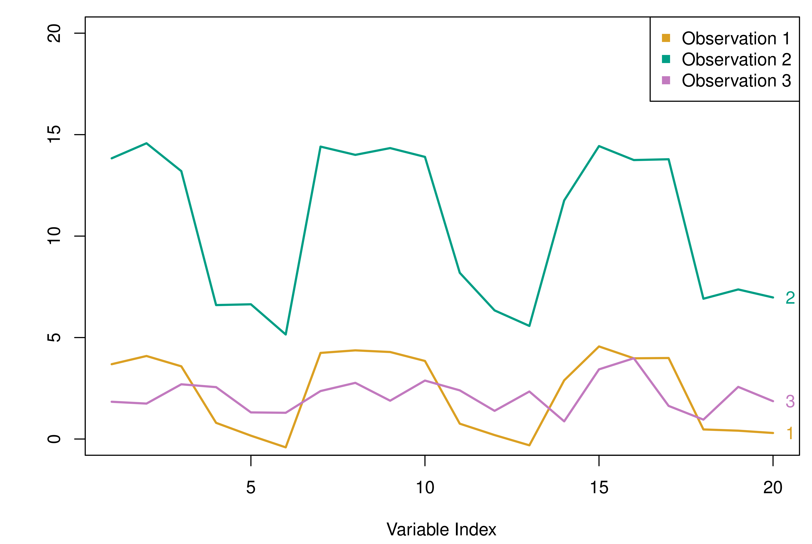

graph LR
A[Data] --> B(Step 1: Randomly Assign Clusters);
B --> C(Iteration 1, Step 2a: Compute Centroids);
C --> D(Iteration 1, Step 2b: Reassign Observations);
D --> E(Iteration 2, Step 2a: Compute Centroids);
E --> F(Iteration 2, Step 2b: Reassign Observations);
F --> G(Final Results);
style A fill:#f9f,stroke:#333,stroke-width:2px
style G fill:#ccf,stroke:#333,stroke-width:4px
Introduction to Unsupervised Learning
So far, most of this course has focused on supervised learning methods like regression and classification.
- Supervised Learning: We have a set of features (X1, X2, …, Xp) and a response variable (Y). The Goal is to predict Y using the Xs. We “teach” the algorithm.
- Examples: Linear regression, logistic regression, Support Vector Machine (SVM).
Now, we’ll explore unsupervised learning.
- Unsupervised Learning: We only have features (X1, X2, …, Xp), without any response variable Y. No “teaching” or “supervision”.
- Goal: Discover interesting patterns and structure in the data, find relationships.
- Examples: Principal Component Analysis (PCA), Clustering.
What is Unsupervised Learning?
Unsupervised learning is a set of statistical tools designed for situations where we have only input features and no output or response variable. Since there’s no “correct answer” to guide the learning process, it’s called “unsupervised.” We’re exploring the data without a specific prediction task in mind.
Key Goals:
- Data Visualization: Find ways to represent the data to see patterns.
- Discover Subgroups: Identify clusters or groups within the data or among the variables.
- Data Pre-processing: Prepare data for supervised learning.
We will cover two major types:
- Principal Components Analysis (PCA): Used for visualization and pre-processing.
- Clustering: Discovering unknown subgroups in data.
Supervised vs. Unsupervised Learning
| Feature | Supervised Learning | Unsupervised Learning |
|---|---|---|
| Goal | Predict a response variable (Y) | Discover patterns and structure |
| Data | Features (X) and response (Y) | Features (X) only |
| Evaluation | Clear metrics (e.g., accuracy, R-squared) | More subjective, harder to evaluate |
| Examples | Regression, classification | PCA, clustering |
| “Correct Answer” | Yes (the response variable) | No (no response variable) |
Unsupervised learning is often more challenging because there’s no straightforward way to check our work. It’s more exploratory and subjective. We don’t have a “ground truth” to compare our results against.
Applications of Unsupervised Learning
Unsupervised learning is increasingly important in various fields:
- Genomics: A cancer researcher analyzes gene expression levels in patients. Unsupervised learning can help find subgroups of patients or genes, leading to a better understanding of the disease.
- E-commerce: An online shopping site identifies groups of shoppers with similar browsing and purchase histories. This allows for targeted recommendations, showing each shopper items they’re more likely to be interested in.
- Search Engines: Search results can be customized based on the click histories of similar users.
- Marketing: Identify market segments (groups of customers) for targeted advertising.
These are just a few examples. Unsupervised learning is a powerful tool for extracting insights from data where there’s no predefined outcome.
Principal Component Analysis (PCA)
Principal Component Analysis (PCA) is a technique to reduce the dimensionality of data while retaining as much variability (information) as possible. It’s like finding the most important “directions” in your data.
- Dimensionality Reduction: Simplifies data by finding a smaller set of representative variables (principal components).
- Data Visualization: Allows us to visualize high-dimensional data in lower dimensions (e.g., 2D or 3D plots).
- Unsupervised: PCA only uses the features (X), not any response (Y).
- Feature Space Directions: Identifies the directions in the feature space along which the original data varies most.
- Data Pre-processing: Can be used to create new, uncorrelated features for use in supervised learning (e.g., Principal Components Regression).
What are Principal Components?
Imagine you have many features (variables). PCA finds new variables, called principal components, that are linear combinations of the original features.
First Principal Component (Z1): The normalized linear combination of features with the largest variance. It captures the most variability in the data.
- Normalized: The sum of the squared coefficients (loadings) equals 1. This prevents arbitrarily large variances.
- Loadings: The coefficients (φ) in the linear combination. They tell us how much each original feature contributes to the principal component.
Subsequent Principal Components: Linear combinations that capture the most remaining variance, subject to being uncorrelated with previous components.
Formula for the first principal component: \[Z_1 = \phi_{11}X_1 + \phi_{21}X_2 + ... + \phi_{p1}X_p\] where \(\sum_{j=1}^{p} \phi_{j1}^2 = 1\) (normalization constraint).
Geometric Interpretation of PCA
The principal component loading vectors define directions in the feature space.
- First Principal Component: The direction along which the data points vary the most.
- Second Principal Component: The direction, orthogonal (perpendicular) to the first, that captures the next most variance. And so on.
Projecting the original data points onto these directions gives us the principal component scores.

In the figure, which displays an advertising data, the green solid line represents the first principal component direction. The blue dashed line represents the second. Since this is a 2D example, there are only two components.
Example: USArrests Data
Let’s look at an example using the USArrests dataset, which contains crime statistics for each of the 50 US states:
- Features:
Murder,Assault,UrbanPop,Rape(per 100,000 residents) - Goal: Visualize the data and find patterns using PCA.

This is a biplot. It shows both the principal component scores (blue state names) and the principal component loadings (orange arrows). For example, the loading for Rape on the first component is 0.54, and on the second component is 0.17. The word Rape is centered at the point (0.54, 0.17).
Interpreting the USArrests Biplot
- First Principal Component (PC1): Places roughly equal weight on
Murder,Assault, andRape, with much less weight onUrbanPop. This component represents overall crime rates. - Second Principal Component (PC2): Places most of its weight on
UrbanPop, representing the level of urbanization. - Correlation:
Murder,Assault, andRapeare close together, indicating they are correlated.UrbanPopis farther away, indicating it’s less correlated with the other three.
| PC1 | PC2 | |
|---|---|---|
| Murder | 0.536 | -0.418 |
| Assault | 0.583 | -0.188 |
| UrbanPop | 0.278 | 0.873 |
| Rape | 0.543 | 0.167 |
The table shows loading vectors. States with large positive scores on PC1 (e.g., California, Nevada, Florida) have high crime rates. States with large positive scores on PC2 (e.g., California) have high urbanization.
Another Interpretation of PCA
Besides finding directions of greatest variance, PCA also finds linear surfaces that are closest to the data points.
- First Principal Component: The line in p-dimensional space closest to the n observations (in terms of average squared Euclidean distance).
- First Two Principal Components: The plane closest to the observations.
- And so on…

Left: The first two principal component directions span the plane that best fits the data. Right: The first two principal component score vectors give the coordinates of the projection of the 90 observations onto the plane.
Proportion of Variance Explained (PVE)
How much information is lost when we project data onto the first few principal components? We use the Proportion of Variance Explained (PVE) to measure this.
- Total Variance: The sum of the variances of all the original features (assuming they are centered).
- Variance Explained by the m-th PC: The variance of the m-th principal component.
- PVE of the m-th PC: The proportion of the total variance explained by the m-th principal component.
Formula for PVE of the m-th PC: \[\frac{\sum_{i=1}^{n} z_{im}^2}{\sum_{j=1}^{p} \sum_{i=1}^{n} x_{ij}^2}\]
PVE: USArrests Example

Left: A scree plot, showing the PVE of each principal component. Right: The cumulative PVE.
- PC1: Explains 62.0% of the variance.
- PC2: Explains 24.7% of the variance.
- Together: PC1 and PC2 explain almost 87% of the variance.
This means that Figure 12.1 (the biplot) provides a good two-dimensional summary of the data. The scree plot helps us decide how many components to keep (look for an “elbow”).
Scaling the Variables
Before performing PCA, we usually scale the variables to have a standard deviation of one.
- Why scale? If variables are measured in different units or have vastly different variances, the variables with the largest variances will dominate the principal components, regardless of whether they are actually the most important.
- Exception: If variables are measured in the same units (e.g., gene expression levels), we might not want to scale.

Left: PCA with scaled variables (like Figure 12.1). Right: PCA with unscaled variables. Assault dominates the first PC because it has the highest variance.
How Many Principal Components to Use?
There’s no single, definitive answer. It depends on the context and the data.
- Scree Plot: Look for an “elbow” in the scree plot – a point where the PVE drops off significantly.
- Interpretation: Keep enough components to capture the interesting patterns in the data.
- Ad Hoc: This process is inherently subjective.
- Supervised Learning: If PCA is used for pre-processing for supervised learning (e.g., Principal Components Regression), we can use cross-validation to select the number of components.
Clustering Methods
Clustering aims to find subgroups (clusters) within a dataset.
- Goal: Partition observations into groups so that observations within a group are similar, and observations in different groups are dissimilar.
- Similarity: What does “similar” mean? This is a crucial, often domain-specific, consideration.
- Unsupervised: We’re looking for structure without a predefined outcome.
We’ll cover two main types:
- K-Means Clustering: Partitions data into a pre-specified number (K) of clusters.
- Hierarchical Clustering: Builds a hierarchy of clusters, represented by a dendrogram.
K-Means Clustering
K-means clustering is a simple and widely used clustering algorithm.
- Input: A dataset and a desired number of clusters, K.
- Output: Assigns each observation to exactly one of K clusters.
- Goal: Minimize the within-cluster variation.

The results of applying K-means clustering with different values of K (the number of clusters) are presented. The color of each observation indicates the cluster to which it was assigned.
The K-Means Algorithm
- Initialization: Randomly assign each observation to one of the K clusters.
- Iteration: Repeat until the cluster assignments stop changing:
- Compute Centroids: For each cluster, calculate the centroid (the mean vector of the observations in that cluster).
- Reassign Observations: Assign each observation to the cluster whose centroid is closest (usually using Euclidean distance).
Note
The algorithm is guaranteed to decrease the within-cluster variation at each step. It finds a local optimum, not necessarily the global optimum.
K-Means: An Illustrative Example

K-Means: Local Optima
Because K-means finds a local optimum, the results depend on the initial random assignment of observations to clusters.
- Recommendation: Run K-means multiple times with different initializations and choose the solution with the lowest within-cluster variation.

Note
K-means clustering was performed six times on the data, each with a different random assignment of observations. Three different local optima were obtained, one of which resulted in better separation between the clusters.
Hierarchical Clustering
Hierarchical clustering builds a hierarchy of clusters, represented by a dendrogram.
- Advantage: Doesn’t require pre-specifying the number of clusters (K). We can choose the number of clusters by “cutting” the dendrogram.
- Dendrogram: A tree-like diagram that shows how clusters are merged.
- Agglomerative (Bottom-Up): Start with each observation as its own cluster, and successively merge the most similar clusters.

Interpreting a Dendrogram
- Leaves: Represent individual observations.
- Fusions: As you move up the tree, leaves and branches fuse, representing the merging of similar clusters.
- Height of Fusion: Indicates the dissimilarity between the merged clusters. Lower fusions mean more similar clusters.
- Cutting the Dendrogram: A horizontal cut across the dendrogram gives a specific number of clusters. The height of the cut determines the number of clusters.

Note
The figure illustrates how to properly interpret a dendrogram. Left: A dendrogram generated using Euclidean distance and complete linkage. Observations 5 and 7 are quite similar. Right: The raw data used to generate the dendrogram.
The Hierarchical Clustering Algorithm
- Initialization: Start with each observation as its own cluster (n clusters). Calculate all pairwise dissimilarities (e.g., using Euclidean distance).
- Iteration: For i = n, n-1, …, 2:
- Find Most Similar Clusters: Identify the two most similar clusters (least dissimilar).
- Merge Clusters: Fuse these two clusters into a single cluster. The dissimilarity between these clusters is the height in the dendrogram where they fuse.
- Update Dissimilarities: Calculate the new pairwise inter-cluster dissimilarities between the remaining i-1 clusters.
Note
Key Question: How do we define the dissimilarity between clusters (groups of observations), not just individual observations? This is where linkage comes in.
Linkage
Linkage defines the dissimilarity between two groups of observations.
| Linkage | Description |
|---|---|
| Complete | Maximal intercluster dissimilarity (dissimilarity between the most dissimilar points in the two clusters). |
| Single | Minimal intercluster dissimilarity (dissimilarity between the most similar points in the two clusters). |
| Average | Mean intercluster dissimilarity (average dissimilarity between all pairs of points in the two clusters). |
| Centroid | Dissimilarity between the centroids of the two clusters. |
Note
Average and complete linkage are generally preferred. Centroid linkage can lead to undesirable inversions.
Choice of Dissimilarity Measure
Besides linkage, we also need to choose a dissimilarity measure between individual observations.
- Euclidean Distance: The most common choice. Measures the straight-line distance between two points.
- Correlation-Based Distance: Considers two observations similar if their features are highly correlated, even if their values are far apart in terms of Euclidean distance.
The choice depends on the type of data and the scientific question.

Practical Issues in Clustering
- Scaling: Should we scale the variables before clustering? (Usually yes, to give equal weight to each variable.)
- Small Decisions, Big Consequences: Choices of dissimilarity measure, linkage, and scaling can have a large impact on the results.
- Validating Clusters: It’s hard to know if the clusters found are real or just an artifact of the clustering process.
- Robustness: Clustering methods are often not very robust to small changes in the data.
Recommendation: Try different choices, look for consistent patterns, and be cautious about over-interpreting the results. Clustering should be a starting point for further investigation, not the final answer.
Summary
- Unsupervised learning is about finding patterns and structure in data without a response variable.
- PCA reduces dimensionality by finding linear combinations of features that capture the most variance. It’s useful for visualization and pre-processing.
- Clustering aims to find subgroups within the data.
- K-means requires pre-specifying the number of clusters (K).
- Hierarchical clustering builds a hierarchy of clusters, represented by a dendrogram.
- Choices of dissimilarity measure, linkage (for hierarchical clustering), and scaling can significantly affect clustering results.
- Clustering is a powerful but often subjective and non-robust technique. It’s best used for exploration and hypothesis generation.
Thoughts and Discussion
- Can you think of other real-world applications where unsupervised learning might be useful?
- What are the potential limitations of relying too heavily on clustering results without further validation?
- How might you combine supervised and unsupervised learning techniques in a single analysis?
- How do you understand the differences and connections between data mining, machine learning, and statistical learning?